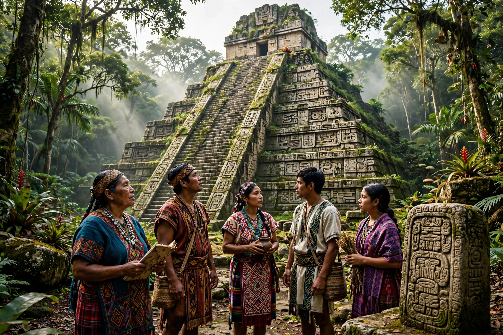

The Mayan languages form a language family spoken in Mesoamerica, both in the south of Mexico and northern Central America, by at least six million Maya peoples, primarily in Guatemala, Mexico, Belize, El Salvador, and Honduras.

| Mayan | |
|---|---|
| Region | Mesoamerica |
| Speakers | c. 6 million |
| Branches | Huastecan, Yucatecan, Chʼolan–Tzeltalan, Greater Mamean, Greater Qʼanjobalan |
Proto-Mayan is estimated to have been spoken about 5,000 years ago. Classic Maya hieroglyphic writing recorded a Chʼolan language. After the Spanish conquest, Mayan languages adopted Latin script.
About 30 living languages are recognised, including Yucatec Maya, Kʼicheʼ, Qʼeqchiʼ, Mam, and Tzotzil. Many are endangered despite official recognition in Guatemala and Mexico.